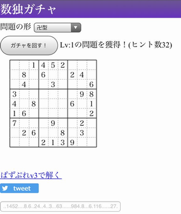
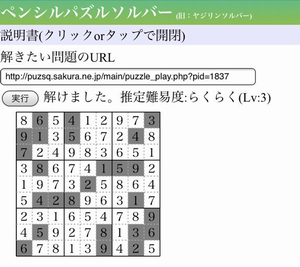
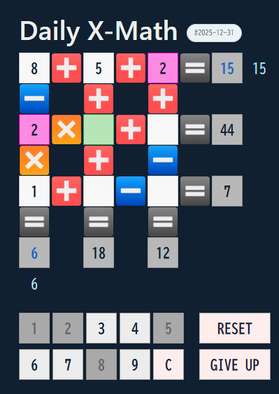
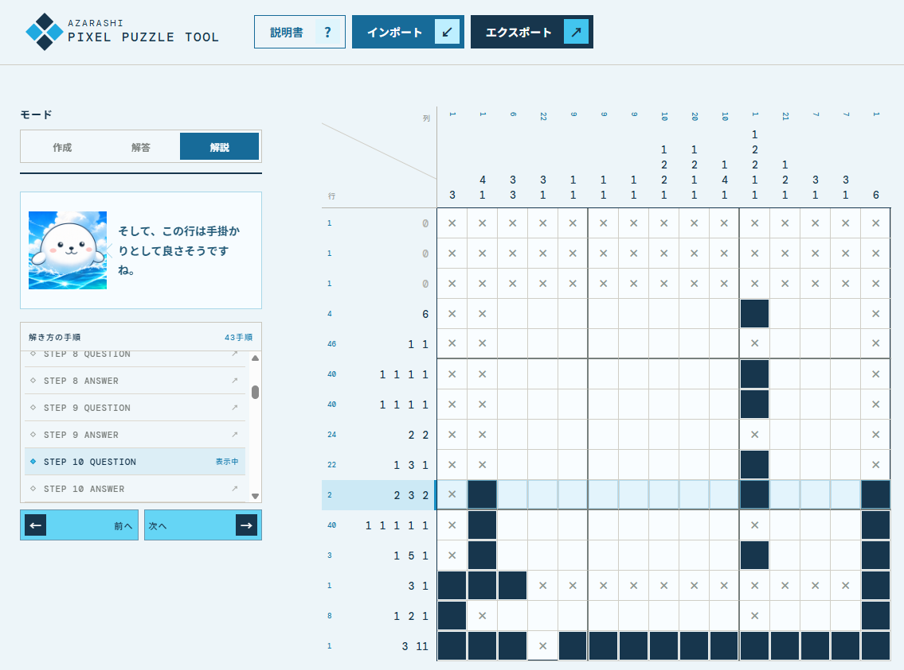
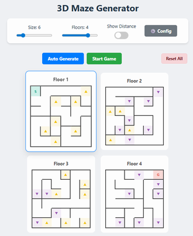
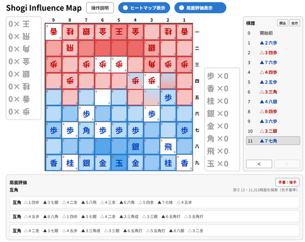
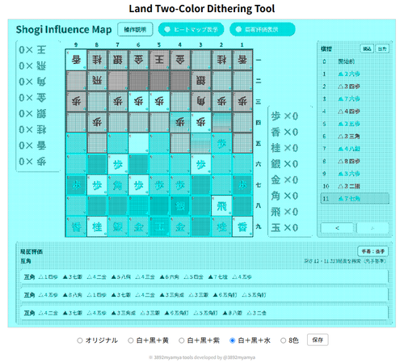
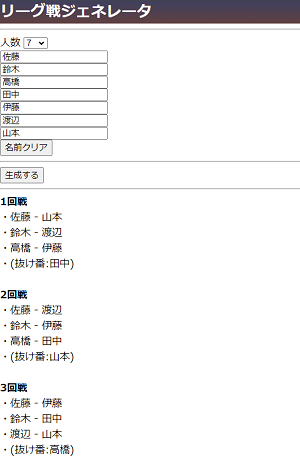
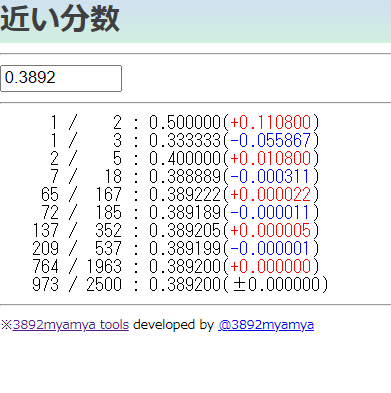
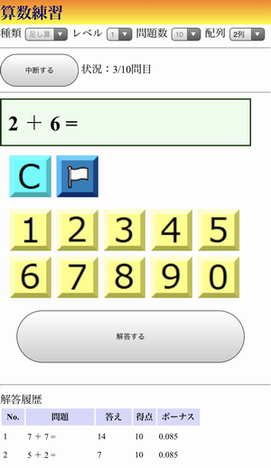

ペンシルパズルガチャ
自動生成されたペンシルパズルの問題がゲットできるガチャです。引いた問題はそのまま「ぱずぷれ v3」さんで解いたり、Twitterでシェアすることが可能です。どんどんガチャを引いてパズルを楽しみましょう！
みゃーみゃ(@3892myamya)が作ったツールを紹介します。※画像は開発中のものである場合があります。

自動生成されたペンシルパズルの問題がゲットできるガチャです。引いた問題はそのまま「ぱずぷれ v3」さんで解いたり、Twitterでシェアすることが可能です。どんどんガチャを引いてパズルを楽しみましょう！

「ぱずぷれ v3」さんや「パズルスクエア」さんで公開されているペンシルパズルを解くことができるかもしれないツールです。数独、ヤジリン、へやわけ等、80種類以上のパズルに対応しています。

1-9までの数字を入力して計算式を完成させるパズルゲームです。問題は日替わりで出題されます。

イラストロジック形式のパズルを作成したり、解いて楽しめるツールです。解答に迷ったときは「お助けアザラシ」が手伝ってくれたり、解説モードでは問題の解き方を一手ずつ教えてくれます。

サイズや階数を指定して立体迷路を自動生成し、遊ぶことができます。※当ツールはPCからの利用を推奨します

将棋盤上の駒を自由に配置・移動し、駒の利きをヒートマップで確認できるツールです。棋譜の読み込み・出力や、将棋エンジンによる局面評価にも対応しています。

画像を白・黒と指定した1色のディザ画像に変換し、錯視効果を楽しめるツールです。画像はブラウザ上で処理され、変換結果は保存できます。

リーグ戦(総当たり戦)の組み合わせを生成できます。参加人数が奇数の場合の抜け番にも対応しています。

入力した小数に近い分数を調査することできます。

小学校低学年～中学年で習う四則演算の練習ができます。問題はランダムで出題され、ハイスコアも記録されるのでゲーム感覚で楽しく計算力を鍛えることができます。